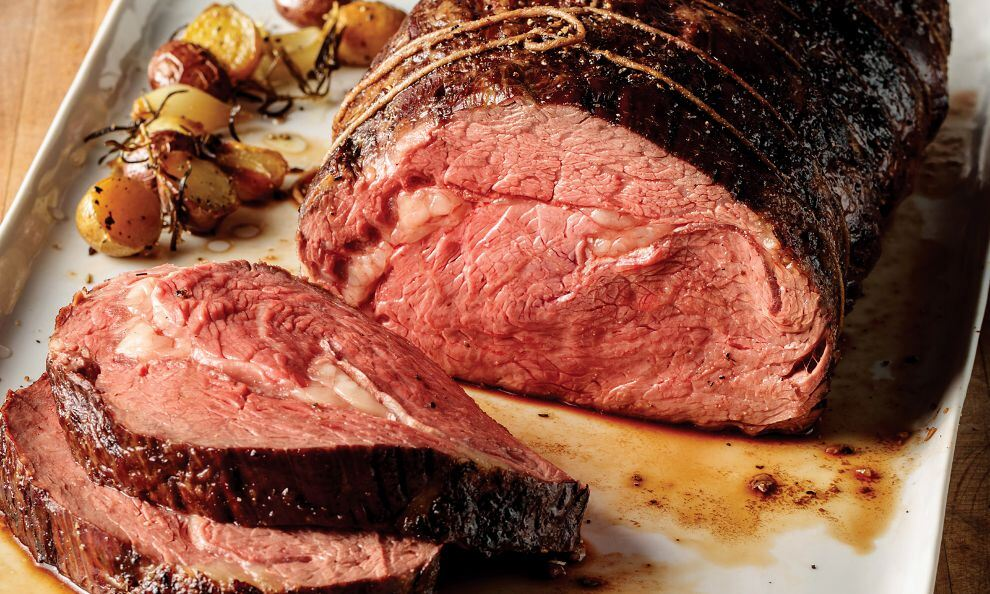

Prime Rib

A delicious medium rare Rib Roast
We are going to be making a prime rib fit for a family dinner, using a 10-12 pound roast.
This is a simple recipe and the most difficult part will be the time constrains. All you
need is the Prime Rib, a lot of salt and pepper, some herbs for an amazing steak dinner.
Ingredients
- 10-12 pound bone-in Rib roast
- 3 tablespoons kosher salt(25g)
- Fresh ground black pepper
- 8 sprigs of rosemary
- 1 large bunch of thyme
- 5 bay leaves
- 2 Bulbs of garlic
- 2 lemon pieces
- Olive Oil
Steps
- Generously seaon your rib roast with salt and pepper, place it on a wire rack
and let it sin the fidge uncovered for 24-48 hours.
- Pull your roast from the fridge and let it rest for 2-3 hours at room temp
roasting to get the chill of your meat
- Preheat oven to 250F(120 Celsius)
- Arrange all the ingredients for roasting in the bottom of a roasting tray,
and drizzle lightly with olive oil.
- Mix all ingredients together for your rub and rub all over the entire piece of meat.
Place your meat on top of your aromatics.
- Place in your preheated until an instant read thermometer placed in the thickest part
of the meat registers 118F. Remove from oven to rest for at least 30 minutes.
- While resting crank oven temp to 500F
- After resting place your beef back into the oven and roast for an additional
15 minutes till golden brown
- Slice and Serve